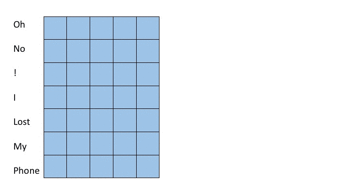

Deep Sentiment Analysis
Michael Brenndoerfer*, Stefan Palombo*, Vinitra Swamy*UC Berkeley Electrical Engineering and Computer Sciences (EECS)
Distill Literature Review
*equal contribution, alphabetical order
Introduction
The research endeavor of sentiment analysis boils down to a simple question: How can a computer read a book? More specifically, how can a computer understand what it’s reading in terms of sentiment?
Sentiment analysis aims to understand people’s opinions, sentiments, attitudes, and emotions from written language or speech (Liu, 2012). It is widely applied on data which contains customer opin- ions. The objective is, to process the data and extract the general attitude of the author towards a certain topic. Let’s consider some examples: A very simple example would be “This soap is amazing” or “Yack. That’s disguisting!”, or more complex phrases such as “The strawberries where delicious, although they we
Road Map
Our review begins with describing the problem space of NLP with this very general question. We then introduce deep sentiment analysis as an area of research inquiry that takes advantage of the recent leaps in computing from Neural Networks and deep learning to solve this problem. We dive into various approaches to address deep sentiment analysis, splitting our article into three main areas: the many ways to represent text data (Featurization) and recent techniques in deep learning to procure sentiment-related insights (LSTMs and CNNs).
Featurization
Encoding Representations
In the research area of Deep Sentiment analysis, we start with a text file with nothing but words, and we know there is latent structure and meaning in their representation. We know that the ordering of words matters, the use of punctuation can convey strong feelings, and perhaps most importantly, word choice reveals a lot about sentiment. We also know that some words have positive or negative connotations with different levels of severity, and that words are related to each other in complex ways. How do we encode the plain text file that we recieve as relevant inputs to a deep learning model? NLP has created a variety of approaches to solve this problem.
- bag-of-words: This approach only keeps the counts of each time each word appears, disregarding the grammar and order of the input data. It makes the strong assumption that words are independent of each other, and that word frequencies reveal everything we need to know about content. While this seems like we're losing a lot of information, this approach performs remarkably well as a baseline.
- TF-IDF: This acronym expands to "Term Frequency - Inverse Document Frequency" and is an expansion on traditional bag-of-words approaches. TF-IDF reflects “importance” of a word in a corpus by creating a metric that's based on the name -- the frequency of the word appearing over the total number of times it's mentioned across all documents.
- n-gram encoding: This is another expansion of bag-of-words, but considers more than one word at a time. If n=1, we have the same thing as the bag-of-words approach. If n=2, we're considering combinations of two words as a unique term in our document. For example, consider the sentence "Vinitra, Michael, and Stefan went to the park." ["Vinitra", "Michael"] would be a bigram, ["Michael", "and"] would be another bigram, and so on.
- stop word removal: This is an addendum to previous techniques mentioned above, and involves removing words that theoretically don't hold much meaning (i.e. "the", "an", "and", etc.). This provides the advantage of reducing the number of unique words in your data, and therefore the dimensionality of your vocabulary. However, the disadvantage here (although not super relevant to the problem of sentiment analysis) is that you might lose some relevant information about author style. The number of quotation marks and stopwords can be used to predict time period of writing / gender of author / other descriptive metadata.
Word Embeddings
After determining the many ways to generate unique terms for our model, we result
Word embeddings are vector generated to represent words, usually trained using neural networks. This boosts performance for sentiment analysis immensely. Word2Vec is a Google package that uses 2-layer NNs and the skip-gram / CBOW algorithms to train embeddings.
For the default example, train the network by training the model for 500 iterations (pressing the green "500" button) and observing the relationship between "woman" and "queen" and "man" and "king". Then perform Principal Component Analysis by pressing the "PCA" button. (This is just a way to reduce dimensions of our data and display them in relation to each other).
Based on UMichigan's Word Embedding Visual Inspector by ronxin
 Figure 2: Word Embedding Space visualization using Tensorflow Projector
Figure 2: Word Embedding Space visualization using Tensorflow Projector
Tensor-Related Models After Word2Vec (Maas et. al, Mikolov et. al)
Maas presents a model that features metrics for semantic similarity and word sentiment on the IMDB dataset, and Mikolov presents a mathematical representation of skip-gram and bag-of-words models in a continuous space.
Recurrent Neural Nets
In the previous section we learned about word embeddings, and that this technique allows us to have a vector-based representation of words, which is able to capture the complex syntax and semantics of a language. Also, we know that classical Artificial Neural Networks (ANN) perform operations on vectors and matrices. So, how can we leverage this knowledge for sentiment analysis tasks?
Input sequences are sentence based
In fact, sentences are just a sequence of words, and sentiment analysis is basically the task of classifying certain sequences of words as certain types of sentiment. Thus, we need to use a technique that allows us to process a sequence based input and assign a specific class. The solution is Recurrent Neural Networks (RNN). We will assume that you know what a regular, fully-connected feed-forward neural network is, and how it works.
Classical neural networks are feed-forward networks that have inputs, potentially multiple hidden layers, and outputs. Such a feed-forward network can only take a certain window of words into consideration, whereas “recurrent neural networks can take into account all of the predecessor words” (Sundermeyer). This works because with RNNs, each element of the input sequence is assigned to a specific timestep of the RNN. This sequential approach allows the network to capture the temporal aspect of the input sequence. Figure 1 depicts the structure of an sequential input.
Example input sequence
All the words in the sequence are highly dependent on each other. As depicted in Figure 1, every word is an input at a specific timestep of the sequence, and every timestep has a hidden state $h_t$ that tries to encode the previously-seen information. Additionally, at every timestep a weight matrix $W^X$, which is different for every timestep, gets multiplied with the current input $x_t$, where $x_t$ represents the current encoded word. $W^H$ is a recurrent weight matrix. This basically means that it stays the same, from the input to the output, but the weights still get updated at every timestep. The goal of $W^H$ is to encapsulate all information across all timesteps. The final hidden state is then fed into a softmax function, which gives a predicted class. The weight matrices within the RNN "are updated through an optimization process called backpropagation through time (Deshpande, 2017)."
States and structure of RNNs
Given the formula used to compute the hidden state $h_t$ at every timestep $t$, we can identify two problems considering different value settings. For example, when $W^H$ has big values, and $W^X$ has small ones, $h_t$ is going to be significantly impacted by $H_{(t-1)}$. Non mathematically speaking, the current hidden state vector is not very dependent on the previous step. In the context of an input sequence of words, the current word would have no significant relationship to/ contextual dependence on the previous one.
Thinking about the above-described situation and considering how backpropagation works (weights are updated based on the gradients of the error with respect to the current weight (Hecht-Nielsen1989)), we can identify two problems. If elements early in the sequence cause the value of the hidden state to become too big, this is going to over-saturate the gradient. This is known as the exploding gradient problem, in which the elements will have an unproportionally high importance. The same thing can occur when a gradient is very small and converges to zero during backpropagation. This then causes the cell to die, known as the vanishing gradient problem. Due to this vanishing and exploding gradient problem, RNNs are harder to train than NNs. This problem also exists in feed-forward networks, but impacts RNNs even more because they are basically larger and deeper feed-forward networks with a cycle.
Long Short-Term Memory
Long Short-Term Memory (LSTM) is a recurrent neural network (RNN) architecture and was already proposed by Hofreiter in 1997 (Hofreiter, 1997). The idea is that the hidden states of the RNN get replaced by so-called LSTM modules, which have four different gates. These gates handle the in- and output, improving the vanishing and exploding gradient problem, as well as allowing the network to "encapsulate information about long-term dependencies in the text" (Deshpande, 2017). The problem is that a regular RNN is not able to connect previously-occurring information to a later-occurring input.
The input, output, forget, and memory modules
As previously mentioned, the LSTM module has four components (sometimes referred to as gates), often denoted as input, output, and forget gate, as well as a memory module. The input is still denoted as $x_t$, but the LSTM requires $x_t$ and $h_{(t-1)}$ as input (the output of the previous state) (Gers et al, 2002). The output will be the more complexly established hidden state $h_t$. Briefly speaking, "the input gate determines how much emphasis to put on each of the inputs, the forget gate determines the information that we'll throw away, and the output gate determines the final $h_t$ based on the intermediate states" (Deshpande, 2017).
To conclude, deep sentiment analysis using LSTMs (or RNNs) consists of taking an input sequence and determining what kind of sentiment the text has. This could be simply determining if the input is positive or negative, or you could look at it in more detail, classifying into categories, such as funny, sad, angry, excited, etc.
Additional applications or LSTMs
Additionally, LSTMs can be used for a variety of other tasks. They proved themselves useful in Language Modeling (Sundermeyer et al.), in Machine Translation (Sutskever et al., 2014), for image captioning (image to text) (Vinyals et al., 2015) as well as video to text (Venugopalan et al., 2015), for handwriting generation (Graves, 2014), for image generation (Gregor et al., 2015) or question answering systems (Wang and Nyberg, 2015).
Convolutional Neural Nets (CNN's)
Review of Convolutional Neural Nets
Convolutional neural networks have proven to excel on computer vision tasks. (LeCun et al., 2015, Krizhevsky et al., 2012) While CNN's are most frequently associated with computer vision and image processing tasks, work has extended CNN’s to nlp tasks. CNN’s in their most basic form consist of convolutional layers, pooling layers, and fully connected layers.
Convolutional layers relate each value of the layer's output to a local patch of the layer’s input. This is achieved by moving a filter, sometimes referred to as a kernel, across the layer's input (LeCun et al., 1998). The filter consists of a matrix. The elements of the filter are multiplied element-wise by values in a patch of either the source image or the output of a previous layer. The resulting values of this multiplication are then summed and passed through a non-linear activation function. Multiple filters can be applied to each input, this results in a notion of channels where each channel represents the results of convolution across the whole input with one filter. During training the weights of these filters are learned via back propagation.
Pooling layers perform a down-select operation on the output of convolutional layers. These pooling operations amongst other things reduce computational cost, provide a notion of simplification to layer outputs, and in the case of images, contribute slightly to rotational and positional invariance.
Depending on the task, fully connected layers are often applied after pooling and convolutional layers. In the case of sentiment analysis, these fully connected layers would likely also include layers with softmax or sigmoid activation in order to classify emotions or otherwise quantify sentiment.
Applying CNN's to sentiment analysis
To utilize Convolutional Neural Networks in sentiment analysis, one most both encode the semantics of source text in a vector representation and maintain the positional dependencies between words. This is usually done by utilizing some word featurization scheme followed by stacking the word embeddings in a matrix. The CNN then applies convolutional filters over these stacked word embeddings giving a notion of positional dependence amongst adjacent words. The first convolutional layer usual spans the entire length of a word vector and then covers a few preceeding and following embeddings. (Kim, 2014)
One prevalent approach is to utilize shallow convolutional neural networks. (Kim, 2014) In these architectures, filters spanning varying numbers of words, normally 2 to 7 words, are all applied to the input. These groups of words are often referred to as n-grams where n is the number of words considered. Max pooling operations are taken over the output from applying each filter in order to extract the most important features from each filer. After the max pooling operation, a fully connected layer is applied. In this strategy, shorter filters learn short term dependencies and larger filters learn longer term dependencies. The max pooling operation then collects the information over a time horizon of a specific length and fully connected layers synthesize this information into a result. This strategy is depicted in the following gif where we apply a filter acting over 3-grams (green) and a filter acting over 5-grams (red). The words on the far left correspond to the word vectors in the input layer (in reality word vectors would be much larger than 5 dimensional)
A more recent approach relies on deep convolutional nets. (Conneau et al., 2016) For deep convolutional approaches, character embeddings are often employed instead of word embeddings. In deep convolutional approaches, smaller filters are applied over a deep set of layers. In this strategy, subsequent layers learn dependencies amongst the features of groups of words or characters produced by previous layers much in the same way that later layers in CNN’s learn more complex features of groups of pixels in image recognition tasks. Because each layer groups features from a portion of the source text and feeds to the next layer, as one descends further into the neural net, the filters can assimilate information from greater proportions of the source text. We show this notion in the following figure. For simplicity, we display word embeddings instead of character embeddings however, one of the landmark achievements of this model structure is successful classification with character embeddings. The purple regions show the values in previous layers which contribute to the state of the purple entry on the right most layer. By moving the sliders it is possible to see how the filter size changes which inputs later layers are computed from.
Drag the slider to change the number of rows in the first and second filters.
Rows in filter for the first layer:
Rows in filter for the second layer:
Even though many state of the art applications in language processing utilize LSTM’s (Yang, 2016), convolutional structures are free of many of the issues that are present in recurrent structures. CNN’s don’t need to backpropagate through a recurrent structure as do LSTM’s, this means that training on CNN’s is significantly faster than with LSTM’s. Additionally, CNN’s aren’t as prone to vanishing and exploding gradients as LSTM’s. This means that CNN's can provide a level of ease of training and exhibit speed advantages that make them an attractive option for text classification broadly and sentiment analysis specifically.
References
Martin Sundermeyer, Ralf Schlüter, and Hermann Ney. LSTM Neural Net- works for Language Modeling. URL https://pdfs.semanticscholar.org/f9a1/ b3850dfd837793743565a8af95973d395a4e.pdf.
Hecht-Nielsen. Theory of the backpropagation neural network. In International Joint Conference on Neural Networks, pages 593–605 vol.1. IEEE, 1989. doi: 10.1109/IJCNN.1989.118638. URL http://ieeexplore.ieee.org/document/118638/.
Adit Deshpande, Perform sentiment analysis with LSTMs, using TensorFlow, July 13 2017, URL https://www.oreilly.com/learning/perform-sentiment-analysis-with-lstms-using-tensorflow
Josef Hochreiter. Untersuchungen zu dynamischen neuronalen Netzen. 1991.
Felix A Gers, Nicol N Schraudolph, and Jürgen Schmidhuber. Learning Precise Timing with LSTM Recurrent Networks. Journal of Machine Learning Research, 3:115–143, 2002. URL http://machinelearning.wustl.edu/mlpapers/paper_files/GersSS02.pdf.
Alex Graves. Generating Sequences With Recurrent Neural Networks. 2014. URL https://arxiv. org/pdf/1308.0850v5.pdf.
Karol Gregor, Ivo Danihelka, Alex Graves, Danilo Jimenez Rezende, and Daan Wierstra. DRAW: A Recurrent Neural Network For Image Generation. 2015. URL https://arxiv.org/pdf/ 1502.04623v2.pdf.
Hecht-Nielsen. Theory of the backpropagation neural network. In International Joint Conference on Neural Networks, pages 593–605 vol.1. IEEE, 1989. doi: 10.1109/IJCNN.1989.118638. URL http://ieeexplore.ieee.org/document/118638/.
James Hong and Michael Fang. Sentiment Analysis with Deeply Learned Distributed Repre- sentations of Variable Length Texts. 2015. URL https://cs224d.stanford.edu/reports/ HongJames.pdf.
Bing Liu. Sentiment Analysis and Opinion Mining. Synthesis Lectures on Human Language Tech- nologies, 5(1):1–167, may 2012. ISSN 1947-4040. doi: 10.2200/S00416ED1V01Y201204HLT016. URL http://www.morganclaypool.com/doi/abs/10.2200/S00416ED1V01Y201204HLT016.
Ilya Sutskever, Oriol Vinyals, and Quoc V Le. Sequence to Sequence Learning with Neural Net- works. 2014. URL https://arxiv.org/pdf/1409.3215.pdf.
Subhashini Venugopalan, Marcus Rohrbach, Jeff Donahue, Raymond Mooney, Trevor Darrell, and Kate Saenko. Sequence to Sequence – Video to Text. 2015. URL https://arxiv.org/pdf/ 1505.00487v3.pdf.
Oriol Vinyals, Alexander Toshev, Samy Bengio, and Dumitru Erhan. Show and Tell: A Neural Image Caption Generator. 2015. URL https://arxiv.org/pdf/1411.4555v2.pdf.
Di Wang and Eric Nyberg. A Long Short-Term Memory Model for Answer Sentence Selection in Question Answering. pages 707–712, 2015. URL http://www.aclweb.org/anthology/ P15-2116.
Hecht-Nielsen. Theory of the backpropagation neural network. In International Joint Conference on Neural Networks, pages 593–605 vol.1. IEEE, 1989. doi: 10.1109/IJCNN.1989.118638. URL http://ieeexplore.ieee.org/document/118638/.
Kim, Y.. Convolutional Neural Networks for Sentence Classification, 2014. https://doi.org/10.3115/v1/D14-1181
Yann LeCun, L´eon Bottou, Yoshua Bengio, and Patrick Haffner. 1998. Gradient-based learning applied to document recognition. Proceedings of the IEEE, 86(11):2278–2324.
Y. LeCun, Y. Bengio, and G. E. Hinton. Deep learning. Nature, 2015.
A. Krizhevsky, I. Sutskever, G. Hinton. 2012. ImageNet Classification with Deep Convolutional Neural Networks. In Proceedings of NIPS 2012.
Yoshua Bengio, Rejean Ducharme, and Pascal Vincent. 2001. A neural probabilistic language model. In NIPS, volume 13, pages 932–938, Vancouver, British Columbia, Canada.
Wang, Y., Huang, M., Zhao, L., Zhu, X. (2016). Attention-based LSTM for Aspect-level Sentiment Classification. Proceedings of the 2016 Conference on Empirical Methods in Natural Language Processing (EMNLP), 606–615.
Conneau, A., Schwenk, H., Barrault, L., Lecun, Y. (2016). Very Deep Convolutional Networks for Text Classification, (2001). https://doi.org/10.1007/s13218-012-0198-z